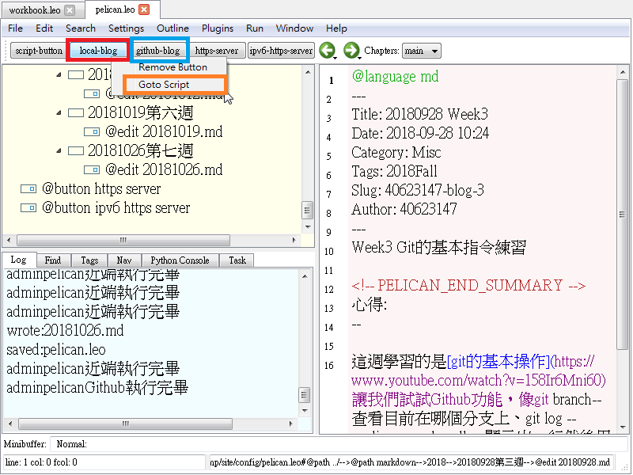

測試網誌增新內容、近端、遠端的實作測試及Onshape操作學習。
學習管理倉儲中的CMSimfly學會Reveal、Pelican、Blog的操作與管理方法
必須先開啟SciTE-->http-server.py--->開啟近端
打開 Leo--->config--->pelican.leo 編輯管理部落格
--->reveal.leo 編輯管理投影片
編輯完後先按右鍵再按Goto Script---->local-blog---->推上近端
---->github-blog--->推上遠端
